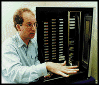

Two reasons: one is to give historians and scholars an idea of what happened
at the birth of this medium. The other reason, which we think is more important,
is to provide services that can thrive from having this much information on the
popular voice, services that can make for a deeper understanding of what we
were thinking about.
An archive is mainly about gathering and storing, which has its own value, but
unless that information is put to use, then it's little more than storage. AltaVista is
an interesting example of a service. It gathers, stores and indexes what's
currently available. What we will have is not only the current presence of the
Web, but also past copies of the Web, as well as the graphics. Whereas most
people use AltaVista to find their way around, people will use the archive when
they want to consult a deeper collection.
One study showed that a document lives an average of 44 days on the
Internet. As a result, what the Web looked like a year ago is basically unknown at
this point. We have anecdotal evidence and people's memories about what was
here a year ago, but we don't know how it's changed on a concrete basis. For
instance, the presidential campaign Web sites are almost all turned off at this
point. Once a candidate drops out, his page disappears. If the Internet does
become an important medium, then this record is important to preserve.
The biggest challenge is to make it useful, but there are also technical and
legal/social challenges toward building the archive. The technical challenges
revolve around gathering information from hundreds of thousands of locations,
storing them effectively, and then offering access in some timely way. Those are
relatively surmountable. The social and legal issues get into murky areas about
what is legal, and what's right. Questions about copyright, privacy, import/export,
pornography all come up when you start to gather this much information.
One way is if organizations can make use of the data to provide services that
are useful. The other way is if we can learn to do this type of project--to build
(data gathering and access) technologies that are useful in other domains. .
.small companies may have terabytes of information they want to serve on Wide
Area Networks. So there are two different directions: one, developing a digital
library of popular voices, and the other, of building technology to manipulate
terabytes of data on Wide Area Networks.
This early Internet has attracted a great deal of enthusiasm and optimism.
People are trying to solve problems they've had for decades in distributing
information through the existing power structure. . .people think it's bringing
democracy and opportunity. They are dreaming this to be the solution to all sorts
of problems. . .they are experimenting and trying all sorts of different services. In
five years, it'll largely be settled. It'll be ad-based or pay-per-view or however
different segments work out. But it will be largely understood and be an Îof
course.' Right now, it's experimentation and exploration.
It was driven home concretely when (in 1989) I proposed a test project called
WAIS to Dow Jones, Apple and KPMG Peat Marwick. All those players said,
ÎYes, we're interested. Let's do it.' That was a turning point for me in
understanding that this would be a major industry.
(Long pause) That's a hard question. (Long pause)
Wow. I don't have a good answer for that. I guess there are some limitations
that need to be fixed if the Net's going to fulfill the promise of being a new-style
publishing medium. Three limitations come to mind. There's the World Wide
Wait, the perception that the Net is unreliable and also that it's impossible to find
information that's appropriate.
We will see news services that are more server-push oriented. . .the
information will flow over desktops based on our own private [needs]. The
infrastructure may be a new set of protocols. But I do believe the Internet
infrastructure (in general) is doing quite well at a data transport level. In the
future, most people will not search for information. They'll watch what comes
over the desktop, and throw it away at relatively different speeds.
www.firefly.com--in May of 1996. They had a wonderful visionary essay on
where this technology can lead. But now that (Web page) is gone as the
company is focused more on commercial concerns.
This is a wonderful time to be alive. Very few generations get to see birth of a
new medium--whether printing press, or telephone, or Internet. It's a chance to
see changes in how companies are structured and even how families relate to
each other. The opportunity to see not just how it will unfold, but to participate
and to see the technology developments is more than a person can ask for.
Brewster Kahle is trying to keep the Internet from disappearing before our very
eyes.
To do this, the 35-year-old
millionaire entrepreneur has set for himself a daunting goal: He wants to archive
the Internet. In its entirety.
In a white Victorian house in San Francisco's Presidio, Kahle and his Internet
Archive staff are putting together the technology to record these early days of the
Net before they slip away into a cyber-black hole.
They are building a library--which ultimately could dwarf the Library of
Congress in volume--on $50,000 tape robots that
hold two terabytes of data each.
In comparison, the Library of Congress itself contains 20
terabytes of text data.

Kahle is no stranger to challenges. After graduating from M.I.T., he worked
with Thinking Machines, which helped dramatically cut search time for
supercomputers.
In 1989, he founded Menlo Park, Calif.-based Wide Area Information Servers.
WAIS, one of the breakthrough search engines on the Net, is used to search
large databases and was one of the few tools of its kind before the advent of the
World Wide Web.
America Online purchased WAIS last year for $15 million in stock. Kahle has
spent at least $400,000 of that to fund and found the Internet Archive.
Why archive the Internet?
What kind of services?
What does it mean to say the Internet is disappearing?
What challenges do you face in
creating the archive?
You've said the archive is not just for posterity, but for profit. Where
does the profit come in?
When historians look at the early Net, what will they see?
Do you remember when you first realized the Net would be something
more than the next video game
platform?
Where do you see the Net going?
That's a valid answer. Anything more?
I hope that the caching infrastructure that's being developed will help with the
Wait and with bandwidth. The latter two--reliability and navigation--can hopefully
be augmented with the Internet Archive.
You've said the Web might not be the Net medium of the future. What did
you mean?
What's your favorite Web page?
Given your early adoption of the Net and the fact you devoted so much
education to it, are you gratified to see mass adoption of the technology?